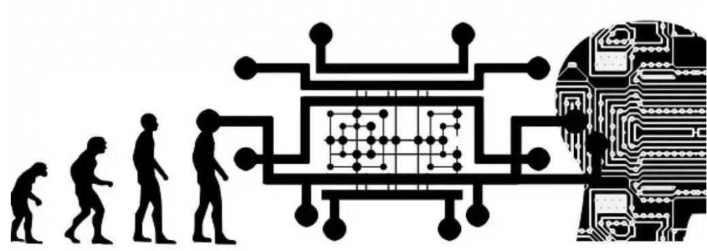

Características, Evolución y Tipos de Inteligencia Artificial
La inteligencia artificial (IA) se refiere a la capacidad de las máquinas para realizar tareas que normalmente requieren inteligencia humana. Estas tareas incluyen el aprendizaje, el razonamiento, la resolución de problemas, la comprensión del lenguaje natural, la percepción y la capacidad de manipular objetos. A continuación, se presentan algunas características clave, la evolución histórica y los tipos de IA.
Características de la Inteligencia Artificial
- Autonomía: Capacidad para tomar decisiones y realizar acciones sin intervención humana directa.
- Adaptabilidad: Aprende de la experiencia y ajusta su comportamiento para mejorar su rendimiento.
- Racionalidad: Toma decisiones basadas en la lógica y la información disponible, buscando la mejor solución posible.
- Percepción: Interpreta datos del entorno a través de sensores (cámaras, micrófonos, etc.) para comprender el mundo.
- Comunicación: Interactúa con humanos y otras máquinas utilizando lenguaje natural o interfaces específicas.
- Creatividad: En algunos casos, puede generar ideas, diseños o soluciones novedosas y originales.
- Aprendizaje Automático (Machine Learning): Subdisciplina de la IA que permite a las máquinas aprender de los datos y mejorar su desempeño con el tiempo sin ser programadas explícitamente.
- Procesamiento del Lenguaje Natural (PLN): Permite a las máquinas comprender, interpretar y generar lenguaje humano. Aplicaciones comunes incluyen asistentes virtuales, chatbots y traductores automáticos.
- Visión por Computadora: Habilidad de las máquinas para interpretar y tomar decisiones basadas en imágenes visuales. Se utiliza en reconocimiento facial, diagnóstico médico por imágenes y vehículos autónomos.
- Sistemas Expertos: Programas de computadora que imitan el juicio y el comportamiento de un experto humano en un campo específico. Utilizados en diagnósticos médicos, análisis financieros y toma de decisiones empresariales.
- Robótica: Integra la IA con la ingeniería robótica para crear máquinas que pueden realizar tareas físicas, como robots industriales, drones y robots domésticos.
Evolución de la Inteligencia Artificial
Décadas de 1950 y 1960: El Nacimiento de la IA
- El término "inteligencia artificial" fue acuñado en 1956 por John McCarthy.
- Los primeros programas de IA se centraron en resolver problemas lógicos y matemáticos.
- Investigación inicial limitada pero prometedora en algoritmos básicos de IA.
Décadas de 1970 y 1980: Invierno de la IA
- Periodo de disminución en la financiación y el interés en la IA debido a expectativas no cumplidas.
- Investigación limitada principalmente a universidades y proyectos académicos.
- Se desarrollaron sistemas expertos que emulaban el conocimiento de expertos en campos específicos.
Década de 1990: Resurgimiento
- Avances en hardware y algoritmos llevaron a un renacimiento del interés en la IA.
- El desarrollo de redes neuronales y algoritmos de aprendizaje profundo marcó un hito importante.
- La IA comenzó a integrarse en aplicaciones prácticas, como el reconocimiento de voz y la visión por computadora.
Década de 2000 en adelante: Era del Big Data y el Aprendizaje Profundo
- La disponibilidad de grandes volúmenes de datos y la potencia de cómputo permitieron avances significativos en el aprendizaje automático.
- La IA se integró en aplicaciones cotidianas como motores de búsqueda, redes sociales y dispositivos inteligentes.
- Surgieron modelos de lenguaje a gran escala, como GPT-3, con capacidad impresionante para comprender y producir lenguaje natural.
Tipos de Inteligencia Artificial
IA Débil (IA Estrecha o ANI)
- Diseñada para realizar una tarea específica.
- Ejemplos incluyen asistentes virtuales como Siri y Alexa, sistemas de recomendación y software de diagnóstico médico.
IA Fuerte (IA General o AGI)
- Tiene la capacidad de realizar cualquier tarea cognitiva humana.
- Actualmente es teórica y no ha sido desarrollada plenamente.
Superinteligencia Artificial (ASI)
- Una forma de IA que supera la inteligencia humana en todos los aspectos.
- Es un concepto futurista y plantea importantes cuestiones éticas y filosóficas.
Articulos

Integrantes
Jose Alejandro Mory Guerrero
CI: 27.239.877
Luis Jose Lopez Ramirez
CI: 31.098.314
Trayecto 2
Seccion SID2C
Formacion Critica